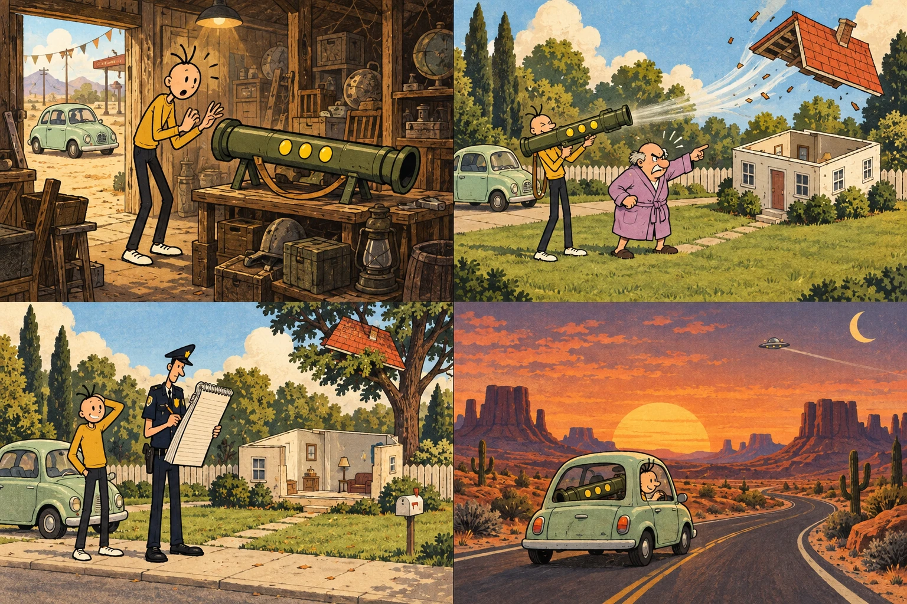
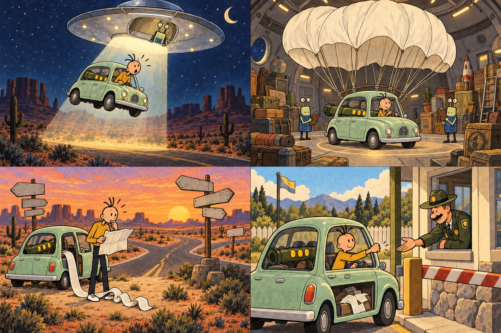
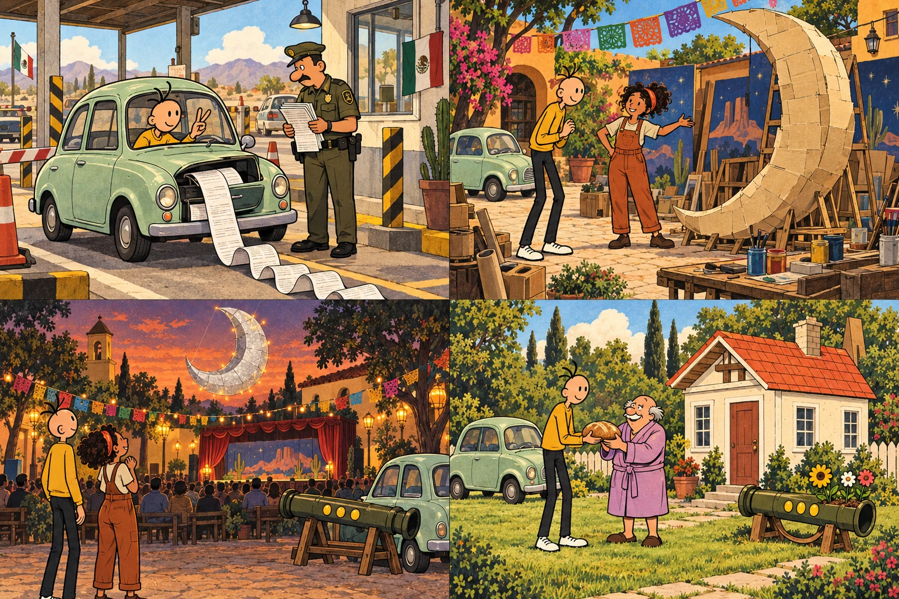

An excellent bad idea

Milo had gone out to buy a loaf of bread. This was worth remembering, because by the end of the afternoon he would be wanted for an architectural misunderstanding, and by midnight he would have argued with something from another galaxy.
At the moment, however, he was standing in a junk shop beside a very large green tube.
“Awesome,” he said. “A bazooka with three shots!”
Three yellow lights glowed along its side. A tag tied to the handle said FOUND BEHIND SOMETHING. The shopkeeper was asleep underneath a newspaper. Milo shook a jar of coins until the man woke up, paid, and carried his purchase outside.
“Any instructions?” Milo asked through the door.
The newspaper rose an inch. “If it starts asking questions, don't answer them.”
Milo waited for the explanation. The newspaper came down again. That appeared to be the entire explanation.
His car was called Biscuit. It was mint green, round at both ends, and so small that putting the bazooka in the back seat meant the front seat had to participate. Milo eventually arranged it diagonally, with its sling around a headrest and its wide muzzle occupying the space normally reserved for sensible decisions.
Under the passenger seat he found a folded road map. His cousin Rosa had circled her town in Mexico and written COME VISIT. BRING BREAD. She was helping build scenery for a neighborhood festival, and Milo had promised to arrive before the weekend.
He put the map in the glove compartment with his travel documents. Then he placed the bread money beside the gear stick. There was no bread money left.
“Small change of plan,” he told Biscuit.
The car made a clicking noise. It did this when it was hot, when it was cold, and when it had reservations about its driver.
Milo looked at the three lights again. He wondered what sort of person would leave something this interesting behind something else.
At the bottom of the tag, in writing too small for him to notice, was another sentence: NO RETURNS WITHOUT ORIGINAL RECEIPT.
A lawn without a house
The shortest route to the bakery passed a perfect square of lawn. Its grass stood at attention. Its fence had been painted so recently that even the shadows looked wet. In the middle stood a little house with a brass number and a very proud front door.
Milo parked beside it because something inside the bazooka was humming.
He lifted the tube out of the car. There was a polite cough, a flash like a camera going off, and a noise remarkably similar to a wardrobe falling down some stairs.
The little house folded.
Its walls tipped inward. Its windows stacked themselves. Its roof sailed into a tree, where it perched like an enormous confused hat. After a moment, nothing remained on the lawn except a doormat and a doorbell with nowhere to live.
One yellow light went out.
From the much larger house next door emerged a man in a lilac dressing gown. He inspected the empty rectangle. He inspected Milo. His face became the color of a stop sign.
“GET OFF MY LAWN!”
Milo should have apologized immediately. Instead, his brain offered him a sentence and his mouth accepted it without checking.
“Not your lawn if you don't have a house.”
The silence afterward was so complete that they both heard a beetle land on the fence.
“That,” said the man, very quietly, “was my display house.”
He explained that he made folding stage scenery. The little house was empty, built for a production of a play called A Very Ordinary Afternoon. Its parts were supposed to fold for transport. Its roof was not supposed to migrate.
“Then it's mostly working,” Milo said.
The man's eyebrows made a shape that caused Milo to reconsider several things about himself.
Milo apologized. Properly, this time. He introduced himself. The man, Mr. Bramble, introduced himself by pointing at a nameplate that had fallen off the house.
From the tree came a small, apologetic creak.
“I can help get it down,” Milo offered.
“With a ladder,” said Mr. Bramble. “I want to be extremely clear about that.”
The architectural police
Officer Bell arrived before the ladder did. Someone had reported a house leaving its address, and there was no box for that on his usual form.
“You are under arrest,” he announced, taking out a notebook.
“For what?” asked Milo.
Officer Bell looked at the doormat. Then at the tree. Then at the notebook, hoping it would suggest something.
“For being extremely difficult to write down.”
Mr. Bramble explained the folding house. Milo explained the junk shop. Nobody could explain why the doorbell now worked when someone stepped on the doormat, although all three of them tried it several times.
The officer rubbed his forehead. “So nobody was inside?”
“Nobody,” said Mr. Bramble. “It's scenery.”
“And the house folds on purpose?”
“Yes. Usually at ground level.”
Officer Bell crossed out three lines, drew a small roof in the margin, and decided that a repair agreement would be more useful than an arrest. Milo would help recover the roof, pay for the damaged hinges, and stop testing mysterious purchases beside other people's property.
Milo signed. Mr. Bramble signed. The officer signed, then realized he had used the page underneath and had everybody sign again.
Retrieving the roof took most of the afternoon. A ladder, two ropes, four neighbors, and a surprisingly judgmental pigeon were involved. Once it was safely on the grass, Mr. Bramble showed Milo the bent brass hinges that needed replacing.
Milo recognized the maker's mark. Rosa had the same hinges in her workshop. He could bring back replacements after his visit.
Mr. Bramble considered this. “Keep the receipt.”
Officer Bell handed Milo a copy of the agreement. “And keep your papers together. People are always losing papers.”
Milo tucked it into the glove compartment. This was becoming the most important part of the car.
As he drove away, he heard Mr. Bramble ring the unattached doorbell again.
“It is a good bell,” the man admitted.
Milo waved. One shot gone. Two remaining. He resolved to make the rest of the journey extremely boring.
Mexico, here I come
“Mexico, here I come!” Milo declared at the first sign pointing south.
Biscuit answered with a rattle from the dashboard. Somewhere behind him, the bazooka hummed a little tune. Milo turned the radio up until there were three competing tunes, none of them good.
At a roadside stop, he bought water, an enormous sandwich, and a packet of biscuits. Buying biscuits for Biscuit seemed polite. Feeding them to Biscuit did not, so he ate them himself.
Rosa called while he was looking for the napkins.
“Have you left yet?”
“Technically, several times.”
“Did you remember the bread?”
Milo looked at the sandwich. “There has been a bread-related complication.”
She sighed the way people sigh when they have known Milo for a long time. The festival was tomorrow evening. She still needed to finish a cardboard moon, a crooked castle, and a mountain that could fit through a normal doorway.
“Just get here safely,” she said. “And don't bring any enormous objects.”
Milo glanced into the back seat.
“How enormous?”
The phone lost its signal at a very convenient moment.
By nightfall, the road had become a black ribbon between low hills. A crescent moon hung above the windshield. Milo liked driving at night. There were fewer distractions. He could watch the stars, follow the white lines, and ignore the bright oval object that had been matching his speed for the last three miles.
He looked up again.
The bright oval object looked down. This was impressive, because it did not appear to have a face.
Milo slowed. The object slowed. He stopped at a turnout. It stopped directly above him.
“Helicopter,” he decided.
No blades. No engine noise. A ring of little lights blinked around its edge.
“Very tidy helicopter.”
The bazooka stopped humming. All at once, Biscuit's radio spoke in a calm voice that was not coming from any radio station.
“PLEASE REMAIN WITH YOUR LUGGAGE.”
A cone of white light settled around the car.
Am I high yet?

Biscuit rose six inches off the road.
Then twelve.
Then an amount Milo did not enjoy calculating.
The sandwich wrapper floated past his nose. A coin drifted out of the cup holder. The bazooka hovered politely above the back seat, as though it had been expecting this all evening.
“Am I high yet?” Milo asked the radio.
“NO.”
The car rose another ten feet.
“How about now?”
“PLEASE DO NOT INTERRUPT THE HEIGHT ASSESSMENT.”
A hatch opened beneath the saucer. Milo could see a room full of shelves, loose cables, and objects that looked as if several junk shops had collided very gently. Biscuit slid inside. The light switched off. The car dropped its last inch with a offended little squeak.
An alien approached the windshield.
It was small and rectangular, with two stalk eyes and a blue vest containing an unreasonable number of pockets. It held a clipboard nearly as large as itself. Its name badge appeared to contain a punctuation mark.
“Luggage collection,” it said.
“You collected my car.”
The alien checked its clipboard. “It was wrapped around the luggage.”
It pointed at the bazooka. Milo pointed at himself. Then they both pointed at the car. The discussion progressed for several minutes without gaining any useful information.
Eventually, the alien explained that the green tube was a missing cargo launcher. It belonged to an interplanetary delivery company. Its three cartridges were intended to move oversized freight. On Earth, apparently, the first one had mistaken Mr. Bramble's house for a flat-pack parcel.
“That explains some things,” said Milo.
“Return authorization?” asked the alien.
“I bought it in a shop.”
“Original receipt?”
Milo produced a crumpled slip from his pocket. The alien held it upside down, sideways, and briefly against its forehead.
“This is for a sandwich.”
“A very expensive sandwich.”
“We cannot process a sandwich.”
From somewhere behind the shelves came a second voice. “We tried once.”
Returns department
The second alien emerged pushing a trolley. It looked exactly like the first alien except that its blue vest had even more pockets, which Milo understood to mean it was in charge.
“Destination?” it asked.
“Mexico.”
“Postcode?”
Milo unfolded the map. Both aliens leaned over Rosa's circle. One tapped it with a ruler.
“Large postcode.”
They could return him to the road, they explained, but the collection beam was strictly for collection. Sending things in the opposite direction required a delivery cartridge.
All three of them looked at the two glowing lights on the bazooka.
“No,” said Milo. “Last time, a house ended up in a tree.”
“Incorrect packaging,” said the first alien.
The second alien put a huge striped parcel sticker on Biscuit's roof. It spent a long time smoothing out the corners. Then it invited Milo to sit in the car while they handled the equipment. He was delighted to discover a situation in which doing absolutely nothing was the helpful option.
There was a soft thump. An enormous paper parachute burst out above Biscuit, caught the air, and filled the entire cargo hold. The aliens vanished behind its folds.
“Is that supposed to happen?” Milo asked.
“MOSTLY,” said the radio.
The hatch opened. Biscuit descended into the night under a rustling white canopy. Two aliens peered over the edge of the saucer, their eyes dangling on their stalks like inquisitive desk lamps.
“Keep the receipt!” one shouted.
A strip of paper followed the car all the way down. It was long enough to have its own weather.
Biscuit landed beside the road. Its wheels touched first, which Milo considered excellent service. The parachute collapsed around the car. He spent twenty minutes untangling it and another five convincing a shrub that it was not entitled to keep a corner.
The saucer blinked twice and disappeared.
One light remained on the green tube. Milo folded the enormous delivery receipt into the glove compartment. It would no longer close.
He sat quietly behind the wheel.
“Now,” he told Biscuit, “we are definitely getting the boring journey.”
The world’s least direct road
The aliens had returned Milo to a road. They had not returned him to the road he had been using.
This one ended at a gate marked SERVICE ACCESS, beside a building marked NO SERVICE. A small arrow pointed in both directions. Somebody had crossed out one of the arrows, then crossed out the crossing-out.
Milo studied the map. He turned it upside down. For a moment this made him feel better, although it did not move the car.
An elderly mechanic appeared from the building carrying a mug.
“Lost?”
“Temporarily rearranged.”
The mechanic looked at the giant parcel sticker on Biscuit's roof. Then he looked at the paper trailing from the glove compartment.
“Deliveries use the other gate.”
Milo decided against mentioning space. He asked for the road south.
The mechanic drew a route on the back of a cereal box. It went around a closed bridge, past an old water tower, and through a village whose main road had been temporarily occupied by a very permanent-looking goat.
“Does the goat move?” asked Milo.
“Occasionally. Don't schedule anything around it.”
Milo thanked him and bought enough fuel to compensate for the map. While the car was being checked, he discovered that the alien parachute made an excellent blanket and a terrible thing to fold. Every time he got one end under control, the other end opened a small tent.
He slept in Biscuit until dawn. He dreamed of a police officer asking a house for its papers while the house insisted it was only visiting.
Morning brought a pink sky, a fresh engine rattle, and a text from Rosa: HOW FAR AWAY?
Milo sent a photograph of the cereal box.
There was a long pause.
Then: I WILL SAVE YOU SOME BREAKFAST.
For the first time all night, Milo felt properly on his way. He followed the mechanic's route, waited patiently for the goat, and finally reached a road sign that agreed with his map.
He cheered so loudly that a bird abandoned a nearby fence post.
Three miles later, he joined the queue at the border.
Papers
The queue moved slowly enough for Milo to learn several things about the bumper in front of him. It had a scratch shaped like a carrot. It had one loose screw. He was beginning to feel that they had become friends.
At last, Biscuit reached the little booth.
The official leaned toward the window.
“Papers.”
Milo had slept badly. He had eaten the last biscuit too quickly. He was still thinking about the goat. Most importantly, he had interpreted the word papers in a way that was about to make everything take longer.
He raised his fist.
“Rock.”
The official looked at his hand.
Milo looked at the official's flat palm.
“Oh,” Milo said. “You win. Best of three?”
Behind Biscuit, somebody's indicator ticked for a very long time.
The official's badge said VEGA. Officer Vega had the patient expression of a person who had already heard every possible explanation for an unusual trunk. He lowered his hand.
“Your travel papers.”
“Right. Of course.”
Milo opened the glove compartment.
The glove compartment exploded in a purely administrative way.
Out came the road map, the house repair agreement, three napkins, a sandwich receipt, the cereal-box directions, and the alien delivery receipt, which unrolled across Milo's knees, out of the window, and onto the pavement.
Officer Vega watched the paper continue to arrive.
“Long trip?”
“Some of it was vertical.”
Milo tried to pull the receipt back into the car. It caught around the gear stick. In the process he discovered a mint from the junk shop, an old parking ticket, and a button that Biscuit had apparently been missing for years.
His passport remained somewhere beneath everything.
Officer Vega directed him into a marked inspection bay so the queue could keep moving. Milo parked and began sorting his possessions into piles: useful, probably useful, sandwich, and things he did not remember owning.
The bazooka gave a little hum.
“Not now,” Milo told it.
Best of three

Officer Vega returned with a clipboard. Milo was now surrounded by enough paper to open a small stationery shop.
“Papers?” said the officer.
Without thinking, Milo made scissors with two fingers.
There was a silence.
“Sorry,” said Milo. “That one was a reflex.”
“I said papers.”
“Yes. And scissors beats—”
Officer Vega closed his eyes. Behind him, another official turned away very quickly. His shoulders were moving.
Milo finally found the correct documents inside the folded road map. He had put them there so that he would not lose them. This was precisely why he had been unable to find them.
He handed everything over. Officer Vega checked the pages, asked about the visit, and then looked through the back window.
“And that?”
“A bazooka,” Milo said.
The officer's expression changed.
“An alien cargo launcher,” Milo added, which did not improve it.
Milo told the whole story. The lawn. The roof. The ladder. The flying saucer. The sandwich receipt. Officer Vega let him finish without interruption, which was somehow worse than interruption.
Then the giant receipt began translating itself.
Letters rippled across the paper. A calm little voice emerged from the parcel sticker on the roof.
“CARGO EQUIPMENT. ONE DELIVERY REMAINING. CUSTOMS INFORMATION AVAILABLE.”
Both men stared at Biscuit.
The sticker gave a cheerful beep.
“PLEASE RATE YOUR COLLECTION EXPERIENCE.”
Officer Vega called a supervisor. The supervisor called a specialist. The specialist read the translated documentation, inspected the sealed launcher, and arranged for it to be safely secured for transport. The whole process took long enough for Milo to buy everyone coffee from a nearby kiosk.
Finally, the paperwork was in order. His documents were returned in a proper folder, and he was cleared to continue.
“Keep these together,” Officer Vega said.
Milo nodded very seriously.
As he pulled away, the officer raised a flat hand in farewell.
Milo nearly made scissors again.
He caught himself just in time and waved instead.
The festival of almost finished things
Rosa found Milo asleep in Biscuit outside her workshop, holding a folder as though someone might ask him for it at any moment.
She knocked on the glass.
“You made it.”
Milo woke with a start. “Paper!”
“Breakfast,” said Rosa.
He followed her into a courtyard crowded with painted scenery. There were cardboard rooftops, a mountain on wheels, and a moon so big that it had to lean against two walls at once. Neighbors were hanging strings of colored flags overhead. Someone was testing a trumpet in a way that suggested the trumpet had objections.
Milo told Rosa about the house. Then about the saucer. By the time he reached the border, she had stopped eating and was watching him over the rim of her mug.
“You were supposed to bring bread.”
“I have a very large parachute.”
She considered that.
“Show me.”
Within twenty minutes, the parachute was spread across the courtyard. Its paper-like fabric was light, strong, and faintly silvery. Rosa tested a scrap of it against the painted moon. The morning light shone through beautifully.
“This,” she said, “might actually be useful.”
Milo tried not to look too pleased. Useful was a word people used about him much less often than interesting.
He spent the afternoon helping. They covered the moon with the parachute fabric. They straightened the mountain. They attached replacement wheels to the crooked castle. Rosa found the right brass hinges for Mr. Bramble and put them in a little box with a receipt.
Milo put the box beside his travel folder.
As evening approached, the courtyard filled with the smell of warm bread from a neighboring bakery. Children arrived in homemade costumes. Musicians carried chairs to the square. The moon was ready, but its supporting frame still stood on the wrong side of a narrow passage.
Rosa measured the passage. Then the frame. Then the passage again, in case it had become more cooperative.
It had not.
“We built a mountain that fits through a doorway,” she said, “and a moon that doesn't.”
One last delivery
They tried turning the moon sideways. They tried tilting it. They tried a method suggested by a man who had once moved a sofa and had never stopped talking about it.
The moon refused every suggestion.
The audience was gathering in the square. The little stage needed its moon before the opening scene. Rosa looked from the blocked passage to the painted sky behind the stage. She had spent weeks making something that could not get to where it belonged.
Milo looked toward Biscuit.
“I might know a delivery company.”
Rosa stared at him.
“Before you say anything,” he added, “this time we read the paperwork.”
They read all of it. Every folded page. Every translated line. Even the section headed IF YOUR PARCEL BECOMES PHILOSOPHICAL, which turned out not to apply.
The remaining cartridge was a scheduled cargo delivery. The equipment's own automatic system would handle it. Nobody needed to guess, improvise, or point a mysterious tube at a neighbor's lawn.
Rosa called the number on the parcel sticker. It took a moment to connect, and then the radio in Biscuit spoke.
“RETURNS DEPARTMENT.”
“Delivery,” said Rosa firmly.
There was a rustle of several alien pockets.
The rectangular alien appeared on the car's small dashboard display. It recognized Milo immediately.
“Sandwich customer.”
“That's me.”
With Rosa supervising, the alien arranged the moon as the final parcel. Everyone stepped clear. The last yellow light warmed to a soft gold.
There was no enormous bang. There was a gentle, businesslike pop.
The moon rose above the courtyard. Its silvery fabric caught the sunset. It floated over the passage, drifted past the strings of flags, and settled into place behind the stage as neatly as a letter slipping into an envelope.
For a moment, nobody spoke.
Then the musicians began to clap. The children cheered. The man who had once moved a sofa said that was almost exactly what he had been going to suggest.
Rosa squeezed Milo's shoulder.
On the dashboard, the alien checked a box.
“Three deliveries,” it said. “Anything else?”
Milo thought about the roof, the road, and the moon.
“No,” he said. “That is definitely enough.”
Rock. Paper. Home.
The festival began beneath the delivered moon. Onstage, a cardboard king lost his cardboard crown, argued with a cardboard mountain, and eventually discovered that both problems could be solved by asking the person holding the scenery.
Milo laughed harder than anyone.
When the show finished, he and Rosa sat on the workshop steps with warm bread and the last of breakfast, which had become dinner through the simple process of waiting.
“Good trip?” Rosa asked.
Milo considered the question. It seemed unfair to answer it with only one word.
“Long,” he said.
The empty launcher sat beside Biscuit. Its three lights were dark. The alien delivery company had remotely disabled it and marked it as an empty keepsake, which came with another receipt. Rosa suggested using it as a planter.
“Something small,” she said. “That stays on the ground.”
The return journey was uneventful. Milo followed the main road. Biscuit kept all four wheels on it. At the border, he had the correct folder ready before anyone spoke.
Officer Vega happened to be at the booth.
“Papers,” he said.
Milo handed them over immediately.
The officer glanced into the back seat. Three cheerful flowers poked out of the green tube.
“Much better,” he said.
As he returned the documents, he quietly made a fist.
Milo looked at it. Then at the officer.
Very carefully, he opened his hand.
“Paper.”
Officer Vega smiled. “Now we're even.”
At home, Milo delivered Mr. Bramble's replacement hinges, the repair receipt, and a loaf of bread as an apology. Together they rebuilt the little display house. The roof stayed where roofs generally prefer to stay.
Officer Bell stopped by to close his report. He admired the finished house, checked the agreement, and asked what had become of the bazooka.
Milo pointed at the flowers.
The officer wrote something down. This time, it fit neatly in the box.
Mr. Bramble inspected his lawn. Milo stood very deliberately on the pavement.
“You can come in,” said Mr. Bramble. “Just wipe your feet.”
Milo looked at the house. He looked at the doormat. He decided that, on this occasion, he did not need to say anything clever.
He wiped his feet.
Somewhere far above the neighborhood, a small flying saucer passed beneath the clouds. Its radio crackled.
“Customer satisfied?” asked one alien.
The other checked its clipboard.
“He kept the receipt.”
That, apparently, was close enough.